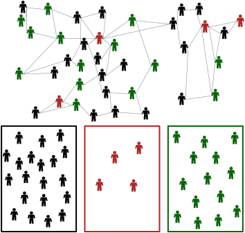
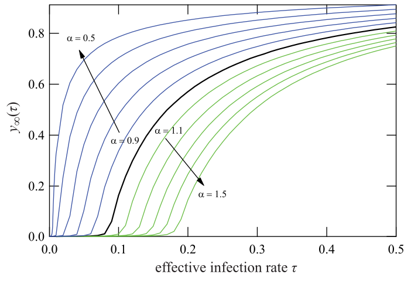
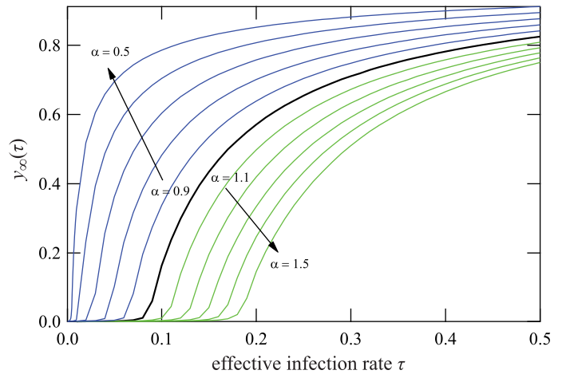
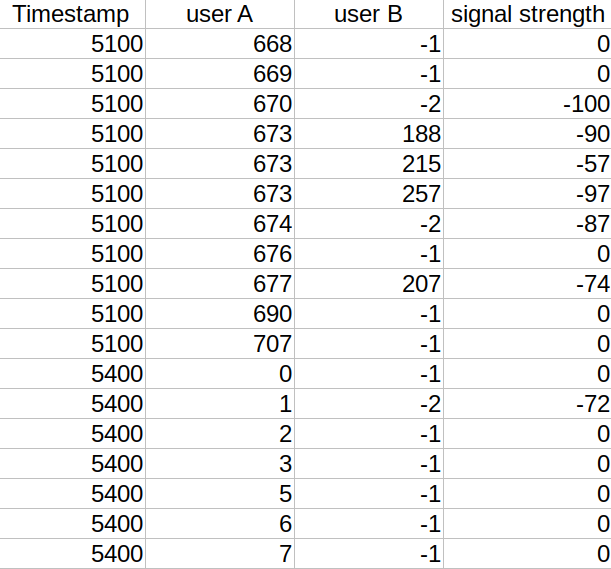
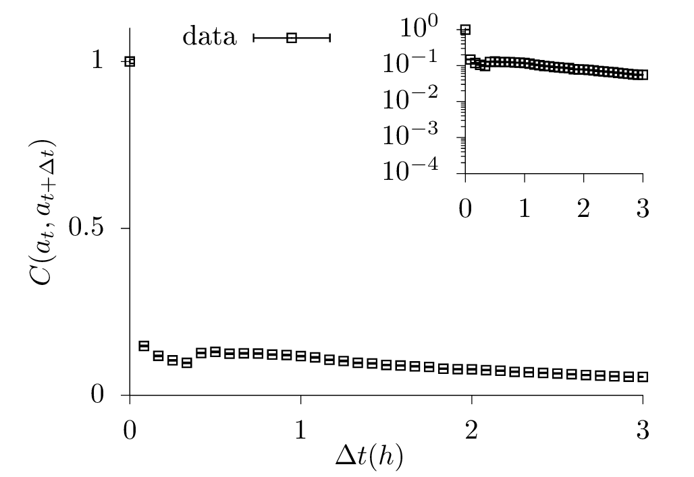
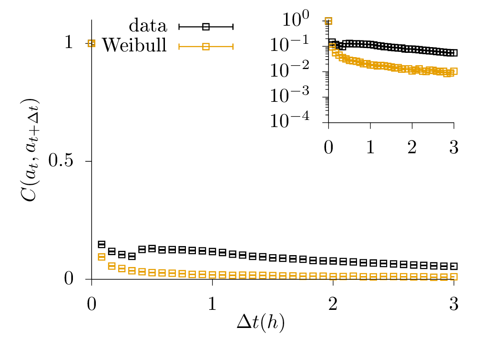
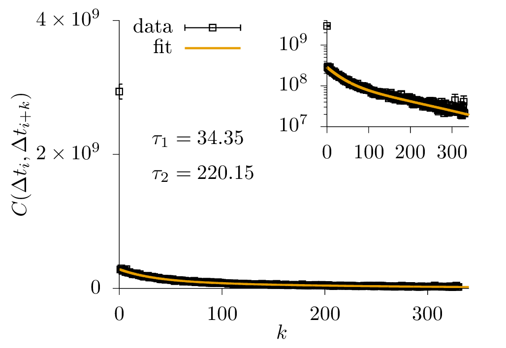
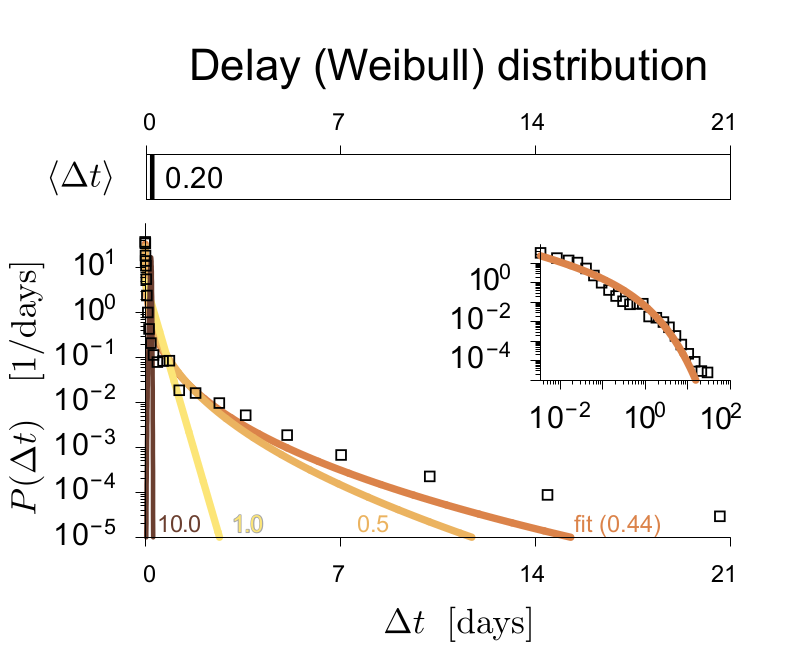
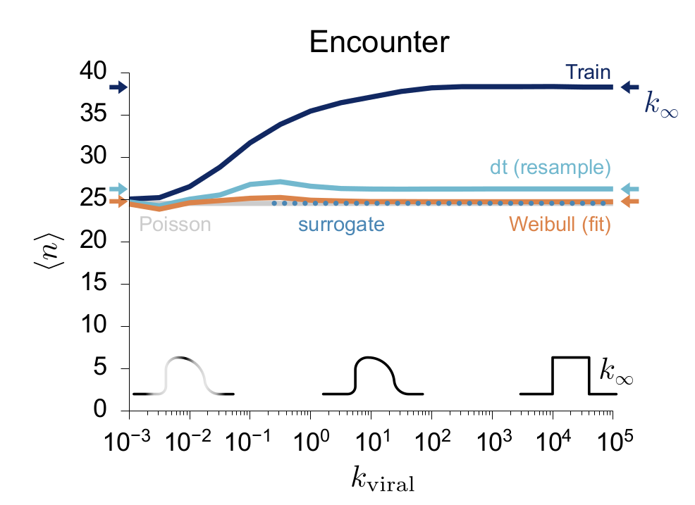

Temporal features of contact patterns affect the spread of a contagious disease
Johannes Zierenberg
Max Planck Institute for Dynamics and Self-Organization, Göttingen, Germany
Max Planck Institute for Dynamics and Self-Organization, Göttingen, Germany
How does contact behavior affect the spread of a contagious disease?
How does contact behavior affect the spread of a contagious disease?
How does contact behavior affect the spread of a contagious disease?

 

ER graph (analogous results on other complex networks)
Van Mieghem & van de Bovenkamp, Phys. Rev. Lett. (2013)
Kitsak et al., Nat. Phys. (2010).
Kiss, Miller & Simon, Mathematics of Epidemics on Networks (2017)
Pastor-Satorras et al., Rev. Mod. Phys. (2015).
What are the temporal features of individual contact behavior?
What are the temporal features of individual contact behavior?
Temporal structure of individual contact behavior from data.

Filter signal strength(>-80) & user:
...
Filter minimum duration (>15 minutes):
...



...
5100 673 215
5100 677 207
...
Create contact trains for each user:| time start | ID contact | duration |
|---|---|---|
| 5100 | 215 | 3000 |
| 5400 | 512 | 300 |
| 6000 | 188 | 12000 |
Filter minimum duration (>15 minutes):
| time start | ID contact | duration |
|---|---|---|
| 5100 | 215 | 3000 |
| 6000 | 188 | 12000 |
$$P(\Delta t) \approx \text{Weibull}\left(\alpha, \frac{\langle \Delta t\rangle}{\Gamma(1+1/\alpha)}\right)$$

Sapiezynski et al., Scientific Data (2019).
How relevant are temporal contact features for disease spread?
1. How to assess the effect of temporal features of individual behavior on disease spread?
2. What is the potential effect of temporal features?
2. What is the potential effect of temporal features?
How relevant are temporal contact features for disease spread?
$\rightarrow$ resample contact trains with bootstrap
$\rightarrow$ resample $\Delta t$ from $\left[\Delta t_1, \Delta t_2, ..., \Delta t_N\right]$
$\rightarrow$ sample $\Delta t$ from $P(\Delta t)\approx\text{Weibull}$
$\rightarrow$ resample $\Delta t$ from $\left[\Delta t_1, \Delta t_2, ..., \Delta t_N\right]$
$\rightarrow$ sample $\Delta t$ from $P(\Delta t)\approx\text{Weibull}$
Disease: S-E-I-R
* get infected upon contact !
* $P(\text{time exposed}) = \Gamma(k, 3/k)$
* $P(\text{time infectious}) = \Gamma(k, 5/k)$

* get infected upon contact !
* $P(\text{time exposed}) = \Gamma(k, 3/k)$
* $P(\text{time infectious}) = \Gamma(k, 5/k)$

Outlook: How to include temporal features of contact behavior into model?
1. Generate correlated Gaussian random variables with Fourier Filtering method
2. Transform correlated Gaussian variables into Weibull distributed variables.
2.a) Project Gaussian into interval $[0,1]$ via CDF
2.b) Project $[0,1]$ into Weibull via inverse CDF
3. Cross fingers that contact trains generated in this way reproduce the temporal features of individuals from data
Very general:
can be combined with any network structure.
2. Transform correlated Gaussian variables into Weibull distributed variables.
2.a) Project Gaussian into interval $[0,1]$ via CDF
2.b) Project $[0,1]$ into Weibull via inverse CDF
3. Cross fingers that contact trains generated in this way reproduce the temporal features of individuals from data
Very general:
can be combined with any network structure.
Zierenberg et al., Phys. Rev. E (2018).